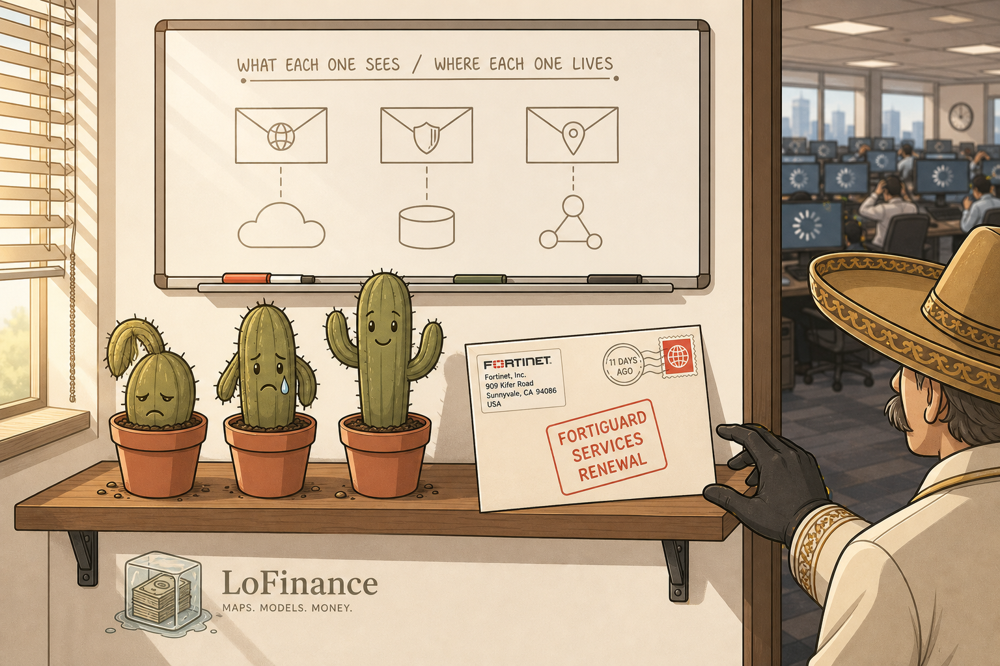
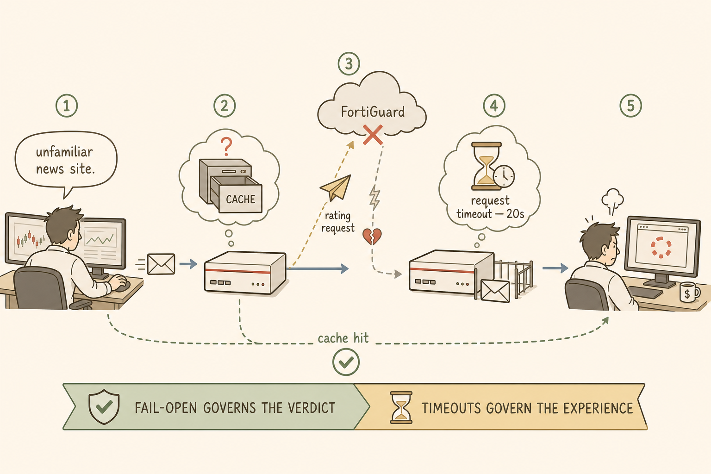
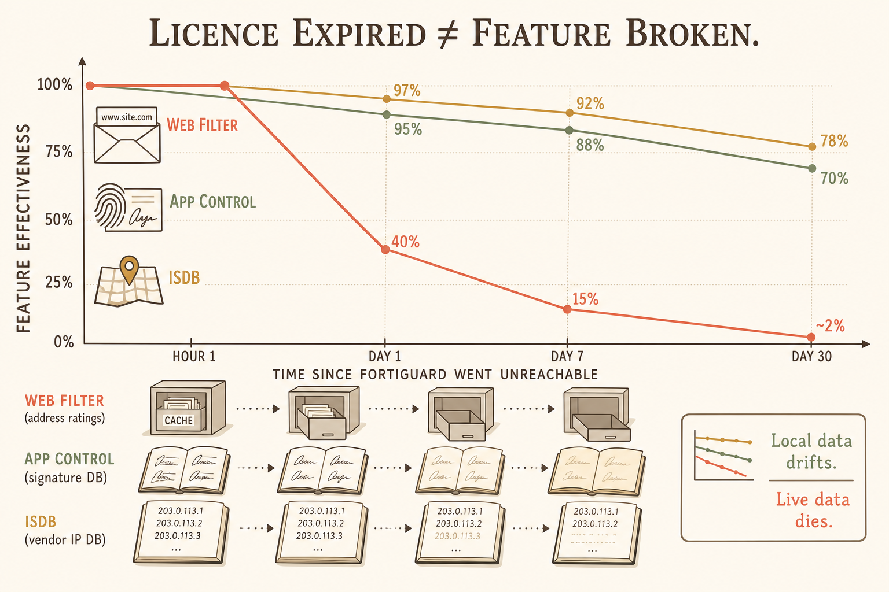
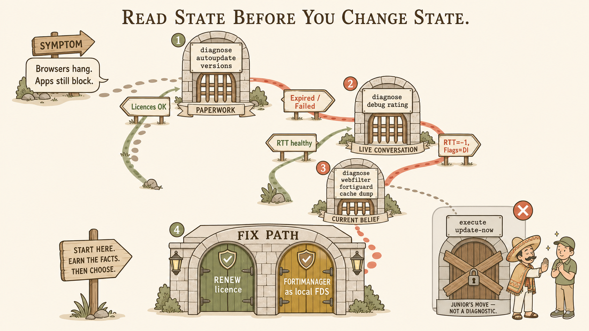
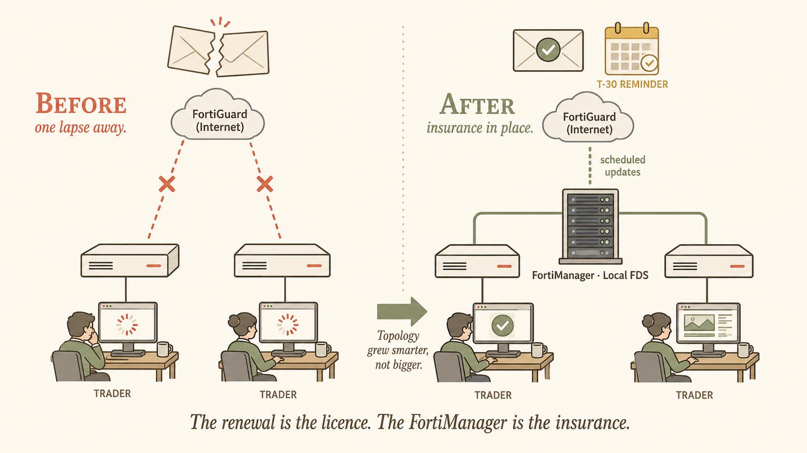

Session 23's most durable memory hook is the silent-gradual failure mode: nothing in config changes, and yet browsers hang, while apps still block. Two visual metaphors reinforce this best. First, a packet journey showing what happens to a browser request when its rating lookup goes unanswered — this makes the "held while waiting for a verdict" mechanism physical. Second, a decision tree showing the senior diagnostic order — paperwork → live conversation → current belief → then, and only then, config. Alongside them, a scene-setting image of the physical envelope on Señor's shelf anchors the story in memory, and a mental-model illustration of the cache decaying over time reinforces the direction-of-time reasoning that took the student to the correct diagnosis.
Image 1 — The envelope on the shelf
Scene-setting illustration. This is the memory anchor for the entire session: the physical avatar of an unmonitored dependency. When the student thinks about FortiGuard subscription failure in the future, this image should surface first.

at 9:14 AM
Image 1 — 16:9 illustrated poster style
Image 2 — The packet's journey during a FortiGuard outage
The core mechanism illustration. Shows what happens to a single browser request when the rating lookup goes unanswered — from user click to timeout hang. This is where the "fail-open governs the verdict, timeouts govern the experience" distinction becomes physically visible.

from user click to timeout
Image 2 — 3:2 process flow
Image 3 — Three tools, three failure curves
The direction-of-time visualisation. Shows how each of the three FortiGuard-dependent features degrades over time when the source goes unreachable. This is the visual form of the core asymmetric-failure model.

on a shared axis
Image 3 — 3:2 mental model
Image 4 — The senior diagnostic tree
The engineer-in-the-room visualisation. Shows the diagnostic order taught this session: paperwork → live conversation → current belief → then and only then configuration. Every branch is a command; no branch is an action.

execute update-now is drawn as the closed exit that says "do not enter."with commands as gates
Image 4 — 16:9 decision path
diagnose autoupdate versions in monospace font. Small subtitle below: "PAPERWORK." Two paths branch downward: left path labelled "Licences OK" (in sage green), right path labelled "Expired / Failed" (in coral). Checkpoint 2 (on the right/expired path): a second archway labelled diagnose debug rating. Subtitle: "LIVE CONVERSATION." Two paths: down-left labelled "RTT healthy" (sage), down-right labelled "RTT=-1, Flags=DI" (coral). Checkpoint 3 (right): archway labelled diagnose webfilter fortiguard cache dump. Subtitle: "CURRENT BELIEF." Checkpoint 4 (final): a wider gate labelled "FIX PATH." Two doors: sage-green door labelled "RENEW licence," gold door labelled "FORTIMANAGER as local FDS." To the side of the tree, in a shaded muted-grey box marked with a red X: a fifth doorway drawn as sealed and boarded up, labelled execute update-now in monospace, with the subtitle "JUNIOR'S MOVE — NOT A DIAGNOSTIC." A small character illustration (line-art Junior figure — young man with earnest expression) stands hopefully near this door; a small line-art Señor figure (with sombrero) gently intercepts him with a raised palm. Soft brown outlines throughout, sage/coral/gold accents as specified. No gradients, no photorealism. Educational storybook feel. The decision tree should feel like a small physical journey a senior engineer walks the student through, not a corporate flowchart.
Image 5 — The resilience posture
The design-level fix. Shows how promoting FortiManager to a local FDS role decouples LoFinance from public FortiGuard availability. Renewal is the licence; FortiManager is the insurance.

with FMG as local FDS
Image 5 — 16:9 topology